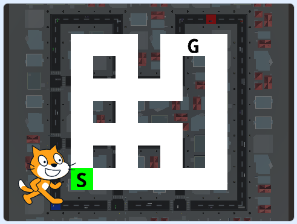

次のページ
2. シミュレータを使ってみよう
1
スタートしよう
ではさっそくシミュレータをスタートしてみましょう。「自動運転車」と書いてあるメニューにシミュレータで使うブロックをまとめてありますので、その中の「スタート」ブロックを1度だけ押して下さい。

するとシミュレータ画面が表示されます。
2
走行ルートを決める
このままでは車は動きませんので、まず走行ルートを決めます。 シミュレータ用ブロックの中にある「ルート表示」ブロックを押して下さい。

するとルート選択画面が表示されます。 「S」がスタート地点で「G」がゴール地点です。
次にシミュレータ用ブロックの中にある「上」「左」「下」「右」ブロックを押してルートを決めて下さい。 最初なので適当で結構です。
すると走行ルートが黄色で表示されます。
3
走行モードにする
ルートを決めたら走ってみましょう。 シミュレータ用ブロックの中にある「ラン」ブロックを押して走行モードにします。
次にシミュレータ用ブロックの中にある「速度を〜にする」ブロックを押すと指定した速度で車が走り始めます。 「ブレーキ」ブロックを押すと止まります。
スクラッチの実行画面の上にある「ストップ」ボタンを押すとタイトル画面に戻ります。
他にもたくさんシミュレータ用ブロックがありますが、それらの使い方についてはおいおい説明します。
次のページ